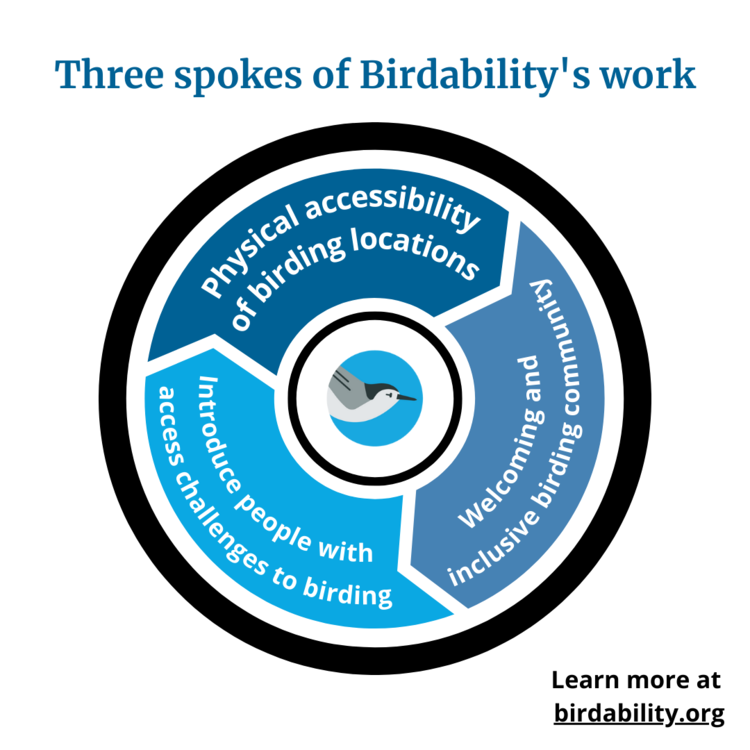

As a Researcher, I would like to delve into the world of birding accessibility.
- Bird watching and its benefits
- Information on Birdability® organization and their goal
- Definition of Accessibility
- How to assess a park for accessibility
- Show maps of accessibility in parks
- Make my own maps from data available on Birdability®
- Present accessibility data of Morgan Arboretum
There will also be a component in which I will input my own data from a park in Montreal
The research essay will feature:
There will also be a component of mapping disability across Montreal and seeing which parks would be most interesting to make accessible for birdwatching, but also for other environmental activities. The data will be based on the Statistics Canada Population Census from 2016.
